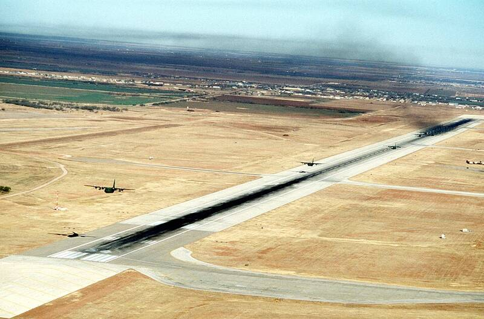

Dyess AFB Texas Texas · Military base · 32.422°N, 99.856°W C-130 Hercules transports in a mass takeoff from Dyess. Photo: TSgt Blakely, U.S. Air Force, Public domain (source) B-1 bomber base. 1 Open in the interactive Watcher Sources Dyess Air Force Base Wikipedia